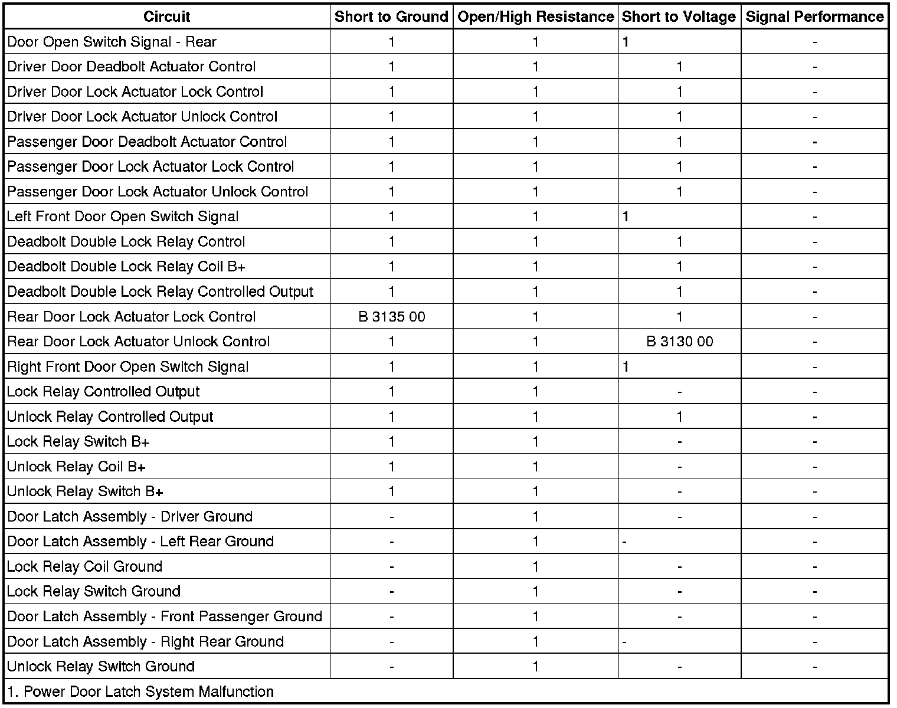

B3130
DTC B3130 or B3135
Diagnostic Instructions
* Perform the Diagnostic System Check - Vehicle (Initial Inspection and Diagnostic Overview) prior to using this diagnostic procedure.
* Review Strategy Based Diagnosis (Initial Inspection and Diagnostic Overview) for an overview of the diagnostic approach.
* Diagnostic Procedure Instructions (Initial Inspection and Diagnostic Overview) provides an overview of each diagnostic category.
DTC Descriptor
DTC B3130 00
- All Door Unlock Circuit
DTC B3135 00
- All Door Lock Circuit
Diagnostic Fault Information

Circuit/System Description
The rear passenger door locks are controlled by the body control module (BCM). When a door lock switch is operated to the lock position, the BCM applies voltage to the rear door lock actuator lock control circuit which energizes the lock relay. With the lock relay coil energized, the switch contacts close allowing battery voltage to flow from the DOOR LKS fuse through the relay switch contacts to the left and right door lock/unlock motors. A ground path is provided by the unlock relay controlled output circuit through the unlock relay switch contacts to ground. The process to unlock the rear doors reverses the flow of current. The BCM applies ground to the rear door lock actuator unlock control circuit which energizes the unlock relay coil. With the unlock relay coil energized, the switch contacts close allowing battery voltage to flow from the DOOR LKS fuse through the relay switch contacts to the left and right door lock/unlock motors. Ground is provided through the lock relay controlled output circuit through the lock relay switch contacts to ground.
Conditions for Running the DTC
Battery voltage must be between 9-16 volts.
Conditions for Setting the DTC
B3130 00
This DTC will set when the BCM detects a short to voltage in the rear door unlock control circuit.
B3135 00
This DTC will set when the BCM detects a short to ground in the rear door lock control circuit.
Actions Taken When the DTC Sets
The BCM will disable all rear door unlock requests.
Conditions for Clearing the DTC
* The condition responsible for setting the DTC no longer exists.
* You issue a scan tool CLEAR DTCs command.
* A history DTC will clear once 50 consecutive malfunction-free ignition cycles have occurred.
Reference Information
Schematic Reference
Door Lock/Indicator Schematics (Door Lock/Indicator Schematics)
Connector End View Reference
Component Connector End Views (Connector Views)
Description and Operation
Power Door Latch Description and Operation (Description and Operation)
Electrical Information Reference
* Circuit Testing (Component Tests and General Diagnostics)
* Connector Repairs (Component Tests and General Diagnostics)
* Testing for Intermittent Conditions and Poor Connections (Component Tests and General Diagnostics)
* Wiring Repairs (Component Tests and General Diagnostics)
Scan Tool Reference
Control Module References (Programming and Relearning)
Circuit/System Testing
B3130
1. Ignition OFF, disconnect the unlock relay.
2. Connect a test lamp between the B+ circuit terminal R35 and the control circuit terminal R31.
3. Command the rear door locks to LOCK and UNLOCK with a scan tool. The test lamp should turn ON and OFF when changing between the commanded states.
• If the test lamp is always ON, test the control circuit for a short to ground. If the circuit tests normal, replace the BCM.
• If the test lamp is always OFF, test the control circuit for a short to voltage or an open/high resistance. If the circuit tests normal, replace the BCM.
4. If the circuits test normal, test or replace the unlock relay.
B3135
1. Ignition OFF, disconnect the lock relay.
2. Connect a test lamp between the control circuit terminal R16 and ground.
3. Command the rear door locks to LOCK and UNLOCK with a scan tool. The test lamp should turn ON and OFF when changing between the commanded states.
• If the test lamp is always ON, test the control circuit for a short to voltage. If the circuit tests normal, replace the BCM.
• If the test lamp is always OFF, test the control circuit for a short to ground or an open/high resistance. If the circuit tests normal, replace the BCM.
4. If the circuits test normal, test or replace the lock relay.
Repair Instructions
Perform the Diagnostic Repair Verification (Verification Tests) after completing the diagnostic procedure.
* Relay Replacement (Attached to Wire Harness) (Relay Replacement (Attached to Wire Harness))Relay Replacement (Within an Electrical Center) (Relay Replacement (Within an Electrical Center))
* Control Module References (Programming and Relearning) for BCM replacement, setup, and programming